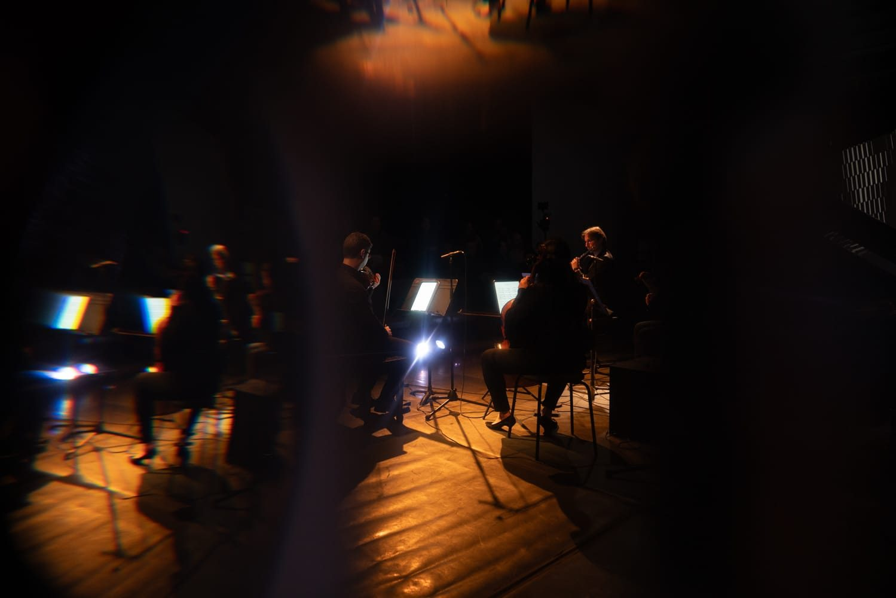

CreArtBox opens its 2027/28 Calls for Scores
Two calls, CA1/2026 for composers of any nationality and CA2/2026 for American composers, take applications from 22 October to 15 December 2026. Any instrumentation, every career stage, and a first round read with no names attached.
Read on →